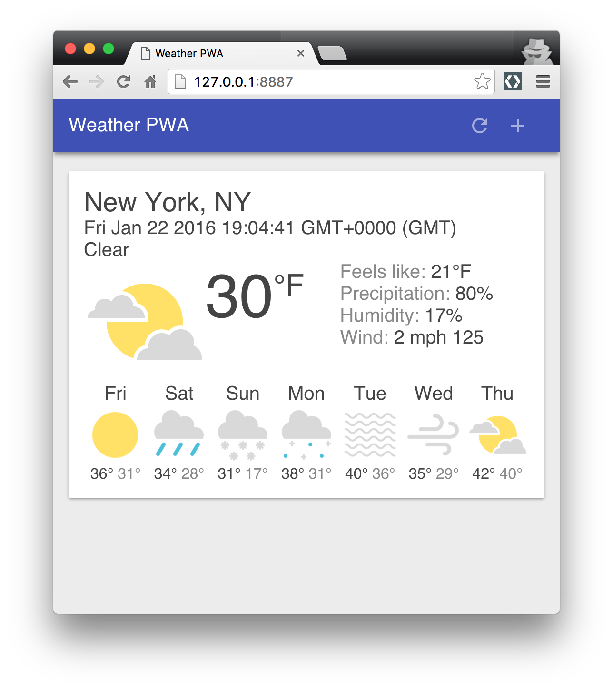

<link rel="import" href="../../../bower_components/polymer/polymer.html">
<link rel="import" href="../../../bower_components/codelab-components/google-codelab-elements.html">

<dom-module id="your-first-pwapp">

<template>

  <style>
    :root {
      --google-codelab-header-background: var(--app-primary-color);
      --google-codelab-fab-background: var(--app-primary-color);


      --paper-blue-500: var(--app-primary-color);;
    };

    google-codelab-step {
      --google-codelab-step-code: {
        font-family: 'Ubuntu Mono',Helvetica,Arial;
      };
    };
  </style>


  <google-codelab title="My test codelab"
                  environment="web"
                  feedback-link="https://github.com/googlecodelabs/your-first-pwapp/issues">

      <google-codelab-step label="Introduction" duration="0">
        <p><a href="https://developers.google.com/web/progressive-web-apps" target="_blank">Progressive Web Apps</a> are experiences that combine the best of the web and the best of apps. They are useful to users from the very first visit in a browser tab, no install required. As the user progressively builds a relationship with the app over time, it becomes more and more powerful. It loads quickly, even on flaky networks, sends relevant push notifications, has an icon on the home screen, and loads as a top-level, full screen experience.</p>
<h2>What is a Progressive Web App?</h2>
<p>A Progressive Web Apps is:</p>
<ul>
<li><strong>Progressive</strong> - Works for every user, regardless of browser choice because it&#39;s built with progressive enhancement as a core tenet.</li>
<li><strong>Responsive</strong> - Fits any form factor: desktop, mobile, tablet, or whatever is next.</li>
<li><strong>Connectivity independent</strong> - Enhanced with service workers to work offline or on low-quality networks.</li>
<li><strong>App-like</strong> - Feels like an app to the user with app-style interactions and navigation because it&#39;s built on the app shell model.</li>
<li><strong>Fresh</strong> - Always up-to-date thanks to the service worker update process.</li>
<li><strong>Safe</strong> - Served via HTTPS to prevent snooping and to ensure content hasn&#39;t been tampered with.</li>
<li><strong>Discoverable</strong> - Is identifiable as an &#34;application&#34; thanks to W3C manifest and service worker registration scope, allowing search engines to find it.</li>
<li><strong>Re-engageable</strong> - Makes re-engagement easy through features like push notifications.</li>
<li><strong>Installable</strong> - Allows users to &#34;keep&#34; apps they find most useful on their home screen without the hassle of an app store.</li>
<li><strong>Linkable</strong> - Easily share via URL, does not require complex installation.</li>
</ul>
<p>This codelab will walk you through creating your own Progressive Web App, including the design considerations, as well as implementation details to ensure that your app meets the key principles of a Progressive Web App.</p>
<aside class="special"><p>Looking for more? Watch Alex Russell&#39;s talk about  <a href="https://www.youtube.com/watch?v=MyQ8mtR9WxI" target="_blank">Progressive Web Apps</a> from the 2015 Chrome Dev Summit.</p>
</aside>
<h2>What are we going to be building?</h2>
<table>
<tr><td colspan="1" rowspan="1"><p>In this codelab, you&#39;re going to build a Weather web app using Progressive Web App techniques. Let&#39;s consider the properties of a Progressive Web App:</p>
<ul>
<li><strong>Progressive</strong> - we&#39;ll use progressive enhancement throughout.</li>
<li><strong>Responsive</strong> - we&#39;ll ensure it fits any form factor.</li>
<li><strong>Connectivity independent</strong> - we&#39;ll cache the app shell with service workers.</li>
<li><strong>App-like</strong> - we&#39;ll use app-style interactions to add cities and refresh the data.</li>
<li><strong>Fresh</strong> - we&#39;ll cache the latest data with service workers.</li>
<li><strong>Safe</strong> - we&#39;ll deploy the app to a host that support HTTPS.</li>
<li><strong>Discoverable and installable</strong> - we&#39;ll include a manifest making it easy for search engines to find our app.</li>
<li><strong>Linkable</strong> - it&#39;s the web!</li>
</ul>
</td><td colspan="1" rowspan="1"><p></p>
</td></tr>
</table>
<h2 class="checklist">What you&#39;ll learn</h2>
<ul class="checklist">
<li>How to design and construct an app using the &#34;app shell&#34; method</li>
<li>How to make your app work offline</li>
<li>How to store data for use offline later</li>
</ul>
<h2>What you&#39;ll need</h2>
<ul>
<li>Chrome 47 or above</li>
<li>Install <a href="https://chrome.google.com/webstore/detail/web-server-for-chrome/ofhbbkphhbklhfoeikjpcbhemlocgigb" target="_blank">Web Server for Chrome</a>, or use your own web server of choice.</li>
<li>The sample code</li>
<li>A text editor</li>
<li>Basic knowledge of HTML, CSS and JavaScript</li>
</ul>
<p>This codelab is focused on Progressive Web Apps. Some concepts are glossed over or code blocks (for example styles or non-relevant JavaScript) are provided for you to simply copy and paste.</p>
<google-codelab-survey survey-id="your-first-pwapp-1">
<h4>How will you use this tutorial?</h4>
<paper-radio-group>
<paper-radio-button>Only read through it</paper-radio-button>
<paper-radio-button>Read it and complete the exercises</paper-radio-button>
</paper-radio-group>
</google-codelab-survey>


      </google-codelab-step>

      <google-codelab-step label="Getting set up" duration="12">
        <h2>Download the Code</h2>
<p>You can download all of the code for this codelab, by clicking the following button:</p>
<p><a href="https://github.com/googlecodelabs/your-first-pwapp/archive/master.zip" target="_blank"><paper-button class="colored" raised><iron-icon icon="file-download"></iron-icon>Download source code</paper-button></a></p>
<p>Unpack the downloaded zip file. This will unpack a root folder (<code>your-first-pwapp-master</code>), which contains one folder for each step of this codelab, along with all of the resources you will need.</p>
<p>The <code>step-NN</code> folders contain the desired end state of each step of this codelab. They are there for reference. We&#39;ll be doing all our coding work in a directory called <code>work</code>.</p>
<h2>Install and verify web server</h2>
<p>While you&#39;re free to use your own web server, this codelab is designed to work well with the Chrome Web Server. If you don&#39;t have that app installed yet, you can install it from the Chrome Web Store.</p>
<p><a href="https://chrome.google.com/webstore/detail/web-server-for-chrome/ofhbbkphhbklhfoeikjpcbhemlocgigb?hl=en" target="_blank"><paper-button class="colored" raised>Install Web Server for Chrome</paper-button></a></p>
<p>After installing the Web Server for Chrome app, click on the Apps shortcut on the bookmarks bar: </p>
<p></p>
<aside class="special"><p>More help: <a href="https://support.google.com/chrome_webstore/answer/3060053?hl=en" target="_blank">Add and open Chrome apps</a></p>
</aside>
<p>In the ensuing window, click on the Web Server icon: </p>
<p></p>
<p>You&#39;ll see this dialog next, which allows you to configure your local web server:</p>
<p></p>
<p>Click the <strong>choose folder</strong> button, and select the <code>work</code> folder. This will enable you to serve your work in progress via the URL highlighted in the web server dialog (in the <strong>Web Server URL(s)</strong> section).</p>
<p>Under Options, check the box next to &#34;Automatically show index.html&#34;, as shown below:</p>
<p></p>
<p>Then stop and restart the server by sliding the toggle labeled &#34;Web Server: STARTED&#34; to the left and then back to the right.</p>
<p></p>
<p>Now visit your work site in your web browser (by clicking on the highlighted Web Server URL) and you should see a page that looks like this:</p>
<p></p>
<p>Obviously, this app is not yet doing anything interesting - so far, it&#39;s just a minimal skeleton with a spinner we&#39;re using to verify your web server functionality. We&#39;ll add functionality and UI features in subsequent steps. </p>
<aside class="special"><p>From this point forward, all testing/verification (e.g. the<strong> Test It Out</strong> sections in subsequent steps) should be performed using this web server setup. You&#39;ll usually be able to get away with simply refreshing your test browser tab.</p>
</aside>


      </google-codelab-step>

      <google-codelab-step label="Architect your App Shell" duration="0">
        <h2>What is the app shell?</h2>
<p>The app&#39;s shell is the minimal HTML, CSS, and JavaScript that is required to power the user interface of a progressive web app and is one of the components that ensures reliably good performance. Its first load should be extremely quick and immediately cached. &#34;Cached&#34; means that the shell files are loaded once over the network and then saved to the local device. Every subsequent time that the user opens the app, the shell files are loaded from the local device&#39;s cache, which results in blazing-fast startup times. </p>
<p>App shell architecture separates the core application infrastructure and UI from the data. All of the UI and infrastructure is cached locally using a service worker so that on subsequent loads, the Progressive Web App only needs to retrieve the necessary data, instead of having to load everything.</p>
<p></p>
<p>Put another way, the app shell is similar to the bundle of code that you&#39;d publish to an app store when building a native app. It is the core components necessary to get your app off the ground, but likely does not contain the data.</p>
<h2>Why use the App Shell architecture?</h2>
<p>Using the app shell architecture allows you to focus on speed, giving your Progressive Web App similar properties to native apps: instant loading and regular updates, all without the need of an app store.</p>
<h2>Design the App Shell </h2>
<p>The first step is to break the design down into its core components.</p>
<p>Ask yourself:</p>
<ul>
<li>What needs to be on screen immediately?</li>
<li>What other UI components are key to our app?</li>
<li>What supporting resources are needed for the app shell? For example images, JavaScript, styles, etc.</li>
</ul>
<p>We&#39;re going to create a Weather app as our first Progressive Web App. The key components will consist of:</p>
<table>
<tr><td colspan="1" rowspan="1"><ul>
<li>Header with a title, and add/refresh buttons</li>
<li>Container for forecast cards</li>
<li>A forecast card template</li>
<li>A dialog box for adding new cities</li>
<li>A loading indicator</li>
</ul>
</td><td colspan="1" rowspan="1"><p></p>
</td></tr>
</table>
<p>When designing a more complex app, content that isn&#39;t needed for the initial load can be requested later and then cached for future use. For example, we could defer the loading of the New City dialog until after we&#39;ve rendered the first run experience and have some idle cycles available.</p>


      </google-codelab-step>

      <google-codelab-step label="Implement your App Shell" duration="0">
        <p>There are multiple ways to get started with any project, and we generally recommend using Web Starter Kit. But, in this case, to keep our project as simple as possible and concentrate on Progressive Web Apps, we&#39;ve provided you with all of the resources you&#39;ll need.</p>
<aside class="special"><p><strong>Learn more</strong> about <a href="https://developers.google.com/web/tools/starter-kit/" target="_blank">Web Starter Kit</a></p>
</aside>
<h2>Create the HTML for the App Shell</h2>
<p>Now we&#39;ll add the core components we discussed in <a href="https://developers.google.com/web/fundamentals/getting-started/your-first-progressive-web-app/step-01" target="_blank">Architect the App Shell</a>.</p>
<p>Remember, the key components will consist of:</p>
<ul>
<li>Header with a title, and add/refresh buttons</li>
<li>Container for forecast cards</li>
<li>A forecast card template</li>
<li>A dialog for adding new cities</li>
<li>A loading indicator</li>
</ul>
<p>Your <code>index.html</code> file in your <code>work</code> directory should look something like this now (this is a subset of the actual contents, don&#39;t copy this code into your file):</p>
<pre><code>&lt;!DOCTYPE html&gt;
&lt;html&gt;
&lt;head&gt;
  &lt;meta charset=&#34;utf-8&#34;&gt;
  &lt;meta http-equiv=&#34;X-UA-Compatible&#34; content=&#34;IE=edge&#34;&gt;
  &lt;meta name=&#34;viewport&#34; content=&#34;width=device-width, initial-scale=1.0&#34;&gt;
  &lt;title&gt;Weather PWA&lt;/title&gt;
  &lt;link rel=&#34;stylesheet&#34; type=&#34;text/css&#34; href=&#34;styles/inline.css&#34;&gt;
&lt;/head&gt;
&lt;body&gt;
  &lt;header class=&#34;header&#34;&gt;
    &lt;h1 class=&#34;header__title&#34;&gt;Weather PWA&lt;/h1&gt;
    &lt;button id=&#34;butRefresh&#34; class=&#34;headerButton&#34;&gt;&lt;/button&gt;
    &lt;button id=&#34;butAdd&#34; class=&#34;headerButton&#34;&gt;&lt;/button&gt;
  &lt;/header&gt;

  &lt;main class=&#34;main&#34;&gt;
    &lt;div class=&#34;card cardTemplate weather-forecast&#34; hidden&gt;
    . . .
    &lt;/div&gt;
  &lt;/main&gt;

  &lt;div class=&#34;dialog-container&#34;&gt;
  . . .
  &lt;/div&gt;

  &lt;div class=&#34;loader&#34;&gt;
    &lt;svg viewBox=&#34;0 0 32 32&#34; width=&#34;32&#34; height=&#34;32&#34;&gt;
      &lt;circle id=&#34;spinner&#34; cx=&#34;16&#34; cy=&#34;16&#34; r=&#34;14&#34; fill=&#34;none&#34;&gt;&lt;/circle&gt;
    &lt;/svg&gt;
  &lt;/div&gt;

  &lt;!-- Insert link to app.js here --&gt;
&lt;/body&gt;
&lt;/html&gt;</code></pre>
<p>Notice the loader is visible by default. This ensures that the user sees the loader immediately as the page loads, giving them a clear indication that the content is loading.</p>
<p>To save time, we&#39;ve already created the <a href="https://weather-pwa-sample.firebaseapp.com/styles/inline.css" target="_blank">stylesheet</a> for you to use. Take a few minutes to review it and customize it to make it more your own.</p>
<aside class="special"><p>We&#39;ve given you the markup and styles to save you some time and make sure you&#39;re starting on a solid foundation. In the next section, you&#39;ll have an opportunity to write your own code.</p>
</aside>
<h2>Add the key JavaScript bootstrap code</h2>
<p>Now that we have most of the UI ready, it&#39;s time to start hooking up the code to make everything work. Like the rest of the app shell, be conscious about what code is necessary as part of the key experience and what can be loaded later.</p>
<p>In our bootstrap code (<code>app.js</code>), we&#39;ve included:</p>
<ul>
<li>An <code>app</code> object that contains some of the key information necessary for the app.</li>
<li>The event listeners for all of the buttons in the header (<code>add/refresh</code>) and in the add city dialog (<code>add/cancel</code>).</li>
<li>A method to add or update forecast cards (<code>app.updateForecastCard</code>).</li>
<li>A method to get the latest weather forecast data from the Firebase Public Weather API (<code>app.getForecast</code>).</li>
<li>A method to iterate the current cards and call <code>app.getForecast</code> to get the latest forecast data (<code>app.updateForecasts</code>).</li>
<li>Some fake data (<code>fakeForecast</code>) you can use to quickly test how things render.</li>
</ul>
<p>Add the JavaScript code</p>
<ol type="1" start="1">
<li>Make a <code>scripts</code> folder in your <code>work</code> directory.</li>
<li>Copy <code>app.js</code> from the <code>resources/step4</code> directory to your <code>scripts</code> folder.</li>
<li>In the <code>index.html</code> file, add a link to the newly created <code>app.js</code> by replacing <code>&lt;!-- Insert link to app.js here --&gt;</code>, with:</li>
</ol>
<pre>&lt;script src=&#34;scripts/app.js&#34; async&gt;&lt;/script&gt;</pre>
<h2>Test it out</h2>
<p>Now that you&#39;ve got the core HTML, styles and JavaScript, it&#39;s time to test the app. While it may not do much yet, make sure it doesn&#39;t write errors to the console.</p>
<p>To see how the fake weather data is rendered, uncomment the line below at the bottom of your <code>scripts/app.js</code> file:</p>
<pre>// app.updateForecastCard(fakeForecast);</pre>
<p>The result should be a nicely formatted (though fake) forecast card with the spinner disabled, like this:</p>
<p></p>
<p><a href="https://weather-pwa-sample.firebaseapp.com/step-04/" target="_blank"><paper-button class="colored" raised>TRY IT</paper-button></a></p>
<p>Once you&#39;ve tried it and verified it works as expected, remove the <code>fakeForecast</code> data and the call to <code>app.updateForecastCard(fakeForecast);</code> . We needed it only to ensure that everything worked as expected. In the next step, we&#39;ll start using real data.</p>
<p>.</p>


      </google-codelab-step>

      <google-codelab-step label="Start with a fast first load" duration="0">
        <p>Progressive Web Apps should start fast and be usable immediately. In its current state, our Weather App starts quickly, but it&#39;s not useable. There&#39;s no data. We could make an AJAX request to get that data, but that results in an extra request and makes the initial load longer. Instead, provide real data in the first load.</p>
<h2>Inject the weather forecast data</h2>
<p>For this code lab, we&#39;ll simulate the server injecting the weather forecast directly into the JavaScript, but in a production app, the latest weather forecast data would be injected by the server based on the IP address geo-location of the user.</p>
<p>Add the following JavaScript code just inside the <a href="http://benalman.com/news/2010/11/immediately-invoked-function-expression/" target="_blank">immediately-invoked function expression</a> in <code>scripts/app.js</code> (after the <code>&#39;use strict&#39;;</code> line near the top):</p>
<pre><code>  var initialWeatherForecast = {
    key: &#39;newyork&#39;,
    label: &#39;New York, NY&#39;,
    currently: {
      time: 1453489481,
      summary: &#39;Clear&#39;,
      icon: &#39;partly-cloudy-day&#39;,
      temperature: 52.74,
      apparentTemperature: 74.34,
      precipProbability: 0.20,
      humidity: 0.77,
      windBearing: 125,
      windSpeed: 1.52
    },
    daily: {
      data: [
        {icon: &#39;clear-day&#39;, temperatureMax: 55, temperatureMin: 34},
        {icon: &#39;rain&#39;, temperatureMax: 55, temperatureMin: 34},
        {icon: &#39;snow&#39;, temperatureMax: 55, temperatureMin: 34},
        {icon: &#39;sleet&#39;, temperatureMax: 55, temperatureMin: 34},
        {icon: &#39;fog&#39;, temperatureMax: 55, temperatureMin: 34},
        {icon: &#39;wind&#39;, temperatureMax: 55, temperatureMin: 34},
        {icon: &#39;partly-cloudy-day&#39;, temperatureMax: 55, temperatureMin: 34}
      ]
    }
  };</code></pre>
<h2>Differentiating the first run</h2>
<p>But, how do we know when to display this information, which may not be relevant on future loads when the weather app is pulled from the cache? When the user loads the app on subsequent visits, they may have changed cities, so we need to load the information for those cities, not necessarily the first city they ever looked up.</p>
<p>User preferences, like the list of cities a user has subscribed to, should be stored locally using IndexedDB or another fast storage mechanism. To simplify this code lab as much as possible, we&#39;ve used <a href="https://developer.mozilla.org/en-US/docs/Web/API/Window/localStorage" target="_blank"><code>localStorage</code></a>, which is not ideal for production apps because it is a blocking, synchronous storage mechanism that is potentially very slow on some devices.</p>
<aside class="special"><p><strong>Extra Credit</strong>: Replace <code>localStorage</code> implementation with <a href="https://www.npmjs.com/package/idb" target="_blank">idb</a>, check out <a href="http://mozilla.github.io/localForage/" target="_blank">localForage</a> as a simple wrapper to idb.</p>
</aside>
<p>First, let&#39;s add the code required to save user preferences at the bottom of the immediately-invoked function expression in <code>scripts/app.js</code> (before the <code>})();</code> line at the bottom of the file):</p>
<pre><code>  // Save list of cities to localStorage.
  app.saveSelectedCities = function() {
    var selectedCities = JSON.stringify(app.selectedCities);
    localStorage.selectedCities = selectedCities;
  };</code></pre>
<p>Next, let&#39;s add the startup code to check if the user has any saved cities and render those, or use the injected data. Add the following code to your <code>scripts/app.js</code> file (after the code you just added):</p>
<pre><code>  /************************************************************************
   *
   * Code required to start the app
   *
   * NOTE: To simplify this codelab, we&#39;ve used localStorage.
   *   localStorage is a synchronous API and has serious performance
   *   implications. It should not be used in production applications!
   *   Instead, check out IDB (https://www.npmjs.com/package/idb) or
   *   SimpleDB (https://gist.github.com/inexorabletash/c8069c042b734519680c)
   ************************************************************************/

  app.selectedCities = localStorage.selectedCities;
  if (app.selectedCities) {
    app.selectedCities = JSON.parse(app.selectedCities);
    app.selectedCities.forEach(function(city) {
      app.getForecast(city.key, city.label);
    });
  } else {
    app.updateForecastCard(initialWeatherForecast);
    app.selectedCities = [
      {key: initialWeatherForecast.key, label: initialWeatherForecast.label}
    ];
    app.saveSelectedCities();
  }</code></pre>
<h2>Save the selected cities</h2>
<p>Finally, don&#39;t forget to save the list of cities when the user adds a new one by adding: <code>app.saveSelectedCities();</code> to the <code>butAddCity</code> button event handler (right before the <code>app.toggleAddDialog(false);</code> line).</p>
<h2>Test it out</h2>
<ul>
<li>When first run, your app should immediately show the user the forecast from <code>initialWeatherForecast</code>.</li>
<li>Add a new city (by clicking the + icon on the upper right) and verify that two cards are shown.</li>
<li>Refresh the browser and verify that the app loads both forecasts and shows the latest information.</li>
</ul>
<p><a href="https://weather-pwa-sample.firebaseapp.com/step-05/" target="_blank"><paper-button class="colored" raised>TRY IT</paper-button></a></p>


      </google-codelab-step>

      <google-codelab-step label="Use service workers to pre-cache the App Shell" duration="0">
        <p>Progressive Web Apps have to be fast, and installable, which means that they work online, offline, and on intermittent, slow connections. To achieve this, we need to cache our app shell using service worker, so that it&#39;s always available quickly and reliably.</p>
<p>If you&#39;re unfamiliar with service workers, you can get a basic understanding by reading <a href="https://developers.google.com/web/fundamentals/primers/service-worker/" target="_blank">Introduction To Service Workers</a> about what they can do, how their lifecycle works and more.</p>
<aside class="special"><p><strong>TIP:</strong> Use a new Incognito window for testing and debugging service workers. When the Incognito window is closed, Chrome will remove any cached data or installed service worker, ensuring that you always start from a clean state.</p>
</aside>
<p>Features provided via service workers should be considered a progressive enhancement, and added only if supported by the browser. For example, with service workers you can cache the app shell and data for your app, so that it&#39;s available even when the network isn&#39;t. When service workers aren&#39;t supported, the offline code isn&#39;t called, and the user gets a basic experience. Using feature detection to provide progressive enhancement has little overhead and it won&#39;t break in older browsers that don&#39;t support that feature.</p>
<aside class="special"><p><strong>Remember</strong>: Service worker functionality is only available on pages that are accessed via HTTPS (https://localhost and equivalents will also work, to facilitate testing). To learn about the rationale behind this restriction check out <a href="http://www.chromium.org/Home/chromium-security/prefer-secure-origins-for-powerful-new-features" target="_blank">Prefer Secure Origins For Powerful New Features</a> from the Chromium team.</p>
</aside>
<h2>Register the service worker if it&#39;s available</h2>
<p>The first step to making the app work offline is to register a service worker, a script that allows background functionality without the need for an open web page or user interaction.</p>
<p>This takes two simple steps:</p>
<ol type="1" start="1">
<li>Tell the browser to register the JavaScript file as the service worker.</li>
<li>Create a JavaScript file containing the service worker</li>
</ol>
<p>First, we need to check if the browser supports service workers, and if it does, register the service worker. Add the following code to the <code>scripts/app.js</code> file (before the <code>})();</code> line at the bottom of the file):</p>
<pre><code>  if (&#39;serviceWorker&#39; in navigator) {
    navigator.serviceWorker
             .register(&#39;./service-worker.js&#39;)
             .then(function() { console.log(&#39;Service Worker Registered&#39;); });
  }</code></pre>
<h2>Cache the site assets</h2>
<p>When the service worker is registered, an install event is triggered the first time the user visits the page. In this event handler, we will cache all the assets that are needed for the application.</p>
<aside class="warning"><p>The code below must NOT be used in production, it covers only the most basic use cases and it&#39;s easy to get yourself into a state where your app shell will never update. Be sure to review the section below that discusses the pitfalls of this implementation and how to avoid them.</p>
</aside>
<p>When the service worker is fired, it should open the <a href="https://developer.mozilla.org/en-US/docs/Web/API/Cache" target="_blank"><code>caches</code></a> object and populate it with the assets necessary to load the App Shell. Create a file called <code>service-worker.js</code> in your application root folder (which should be <code>your-first-pwapp-master/work</code>). This file must live in the application root because the scope for service workers is defined by the directory in which the file resides. Add this code to your new <code>service-worker.js</code> file:</p>
<pre><code>var cacheName = &#39;weatherPWA-step-6-1&#39;;
var filesToCache = [];

self.addEventListener(&#39;install&#39;, function(e) {
  console.log(&#39;[ServiceWorker] Install&#39;);
  e.waitUntil(
    caches.open(cacheName).then(function(cache) {
      console.log(&#39;[ServiceWorker] Caching app shell&#39;);
      return cache.addAll(filesToCache);
    })
  );
});</code></pre>
<p>First, we need to open the cache with <code>caches.open()</code> and provide a cache name. Providing a cache name allows us to version files, or separate data from the app shell so that we can easily update one but not affect the other.</p>
<p>Once the cache is open, we can then call <code>cache.addAll()</code>, which takes a list of URLs, then fetches them from the server and adds the response to the cache. Unfortunately, <code>cache.addAll()</code> is atomic, if any of the files fail, the entire cache step will also fail!</p>
<aside class="special"><p><strong>Sanity Check:</strong> You can make sure your service worker has been registered properly and that the <code>install</code> and <code>activate</code> events are being fired by reloading the page and checking the <a href="https://developers.google.com/web/tools/chrome-devtools/debug/console/console-ui?hl=en" target="_blank">Console in the DevTools</a>.</p>
</aside>
<p><strong>Be sure to change the </strong><strong><code>cacheName</code></strong><strong> variable each time you make changes to your service worker</strong> to ensure you&#39;re always getting the latest version of the files from the cache. It&#39;s important to periodically purge the cache of unused content and data. Add an event listener to the <code>activate</code> event that gets all of the cache keys and deletes the unused ones by adding the following code to the bottom of your <code>service-worker.js</code> file:</p>
<pre><code>self.addEventListener(&#39;activate&#39;, function(e) {
  console.log(&#39;[ServiceWorker] Activate&#39;);
  e.waitUntil(
    caches.keys().then(function(keyList) {
      return Promise.all(keyList.map(function(key) {
        if (key !== cacheName) {
          console.log(&#39;[ServiceWorker] Removing old cache&#39;, key);
          return caches.delete(key);
        }
      }));
    })
  );
});</code></pre>
<p>Finally, let&#39;s update the list of files required for the app shell. In the array, we need to include all of the files our app needs, including images, JavaScript, stylesheets, etc. Near the top of your <code>service-worker.js</code> file, replace <code>var filesToCache = [];</code> with the code below:</p>
<pre><code>var filesToCache = [
  &#39;/&#39;,
  &#39;/index.html&#39;,
  &#39;/scripts/app.js&#39;,
  &#39;/styles/inline.css&#39;,
  &#39;/images/clear.png&#39;,
  &#39;/images/cloudy-scattered-showers.png&#39;,
  &#39;/images/cloudy.png&#39;,
  &#39;/images/fog.png&#39;,
  &#39;/images/ic_add_white_24px.svg&#39;,
  &#39;/images/ic_refresh_white_24px.svg&#39;,
  &#39;/images/partly-cloudy.png&#39;,
  &#39;/images/rain.png&#39;,
  &#39;/images/scattered-showers.png&#39;,
  &#39;/images/sleet.png&#39;,
  &#39;/images/snow.png&#39;,
  &#39;/images/thunderstorm.png&#39;,
  &#39;/images/wind.png&#39;
];</code></pre>
<aside class="special"><p>Be sure to include all permutations of file names, for example our app is served from <code>index.html</code>, but it may also be requested as <code>/</code> since the server sends <code>index.html</code> when a root folder is requested. You could deal with this in the <code>fetch</code> method, but it would require special casing which may become complex.</p>
</aside>
<p>Our app doesn&#39;t work offline quite yet. We&#39;ve cached the app shell components, but we still need to load them from the local cache.</p>
<h2>Serve the app shell from the cache</h2>
<p>Service workers provide the ability to intercept requests made from our Progressive Web App and handle them within the service worker. That means we can determine how we want to handle the request and potentially serve our own cached response.</p>
<p>For example:</p>
<pre><code>self.addEventListener(&#39;fetch&#39;, function(event) {
  // Do something interesting with the fetch here
});</code></pre>
<p>Let&#39;s now serve the app shell from the cache. Add the following code to the bottom of your <code>service-worker.js</code> file:</p>
<pre><code>self.addEventListener(&#39;fetch&#39;, function(e) {
  console.log(&#39;[ServiceWorker] Fetch&#39;, e.request.url);
  e.respondWith(
    caches.match(e.request).then(function(response) {
      return response || fetch(e.request);
    })
  );
});</code></pre>
<p>Stepping from inside, out, <code>caches.match()</code> evaluates the web request that triggered the <a href="https://developer.mozilla.org/en-US/docs/Web/API/Fetch_API" target="_blank"><code>fetch</code></a> event, and checks to see if it&#39;s available in the cache. It then either responds with the cached version, or uses <code>fetch</code> to get a copy from the network. The <code>response</code> is passed back to the web page with <code>e.respondWith()</code>.</p>
<aside class="warning"><p>If you&#39;re not seeing the <code>[ServiceWorker]</code> logging in the console, be sure you&#39;ve changed the <code>cacheName</code> variable and reload the page. If that doesn&#39;t work, see the section on Tips for testing live service workers.</p>
</aside>
<h2>Beware of the edge cases</h2>
<p>As previously mentioned, this code <strong>must not be used in production</strong> because of the many unhandled edge cases.</p>
<h3>Cache depends on updating the cache key for every change</h3>
<p>For example this caching method requires you to update the cache key every time content is changed, otherwise, the cache will not be updated, and the old content will be served. So be sure to change the cache key with every change as you&#39;re working on your project!</p>
<h3>Requires everything to be redownloaded for every change</h3>
<p>Another downside is that the entire cache is invalidated and needs to be re-downloaded every time a file changes. That means fixing a simple single character spelling mistake will invalidate the cache and require everything to be downloaded again. Not exactly efficient.</p>
<h3>Browser cache may prevent the service worker cache from updating</h3>
<p>There&#39;s another important caveat here. It&#39;s crucial that the HTTPS request made during the install handler goes directly to the network and doesn&#39;t return a response from the browser&#39;s cache. Otherwise the browser may return the old, cached version, resulting in the service worker cache never actually updating!</p>
<h3>Beware of cache-first strategies in production</h3>
<p>Our app uses a cache-first strategy, which results in a copy of any cached content being returned without consulting the network. While a cache-first strategy is easy to implement, it can cause challenges in the future. Once the copy of the host page and service worker registration is cached, it can be extremely difficult to change the configuration of the service worker (since the configuration depends on where it was defined), and you could find yourself deploying sites that are extremely difficult to update!</p>
<h3>How do I avoid these edge cases?</h3>
<p>So how do we avoid these edge cases? Use a library like <a href="https://github.com/GoogleChrome/sw-precache" target="_blank">sw-precache</a>, which provides fine control over what gets expired, ensures requests go directly to the network and handles all of the hard work for you.</p>
<h2>Tips for testing live service workers</h2>
<p>Debugging service workers can be a challenge, and when it involves caching, things can become even more of a nightmare if the cache isn&#39;t updated when you expect it. Between the typical service worker life cycle and bug in your code, you may become quickly frustrated. But don&#39;t. There are some tools you can use to make your life easier.</p>
<p>Some tips:</p>
<ul>
<li>Once a service worker has been unregistered, it may remain listed until its containing browser window is closed.</li>
<li>Chrome occasionally displays a console error when trying to retrieve the service worker, this is safe to ignore.</li>
<li>If multiple windows to your app are open, the new service worker will not take effect until they&#39;ve all been reloaded and updated to the latest service worker.</li>
<li>Unregistering a service worker does not clear the cache, so it may be possible you&#39;ll still get old data if the cache name hasn&#39;t changed.</li>
<li>If a service worker exists and a new service worker is registered, the new service worker won&#39;t take control until the page is reloaded, unless you take <a href="https://github.com/GoogleChrome/samples/tree/gh-pages/service-worker/immediate-control" target="_blank">immediate control</a>.</li>
</ul>
<h3>Your new best friend: chrome://serviceworker-internals</h3>
<p>Chrome&#39;s Service Worker Internals page (<code>chrome://serviceworker-internals</code>) is a life saver, easily allowing you to stop and un-register existing service workers and start fresh. You can also use this page to launch the Developer Tools on the service worker, giving you access to the console of the service worker.</p>
<h2>Test it out</h2>
<ul>
<li>Open the Chrome DevTools or open a new tab and check <code>chrome://serviceworker-internals</code> to make sure the service worker is properly registered and the right resources are cached.</li>
<li>Try changing the cacheName and make sure that the cache is properly updated.</li>
</ul>
<p><a href="https://weather-pwa-sample.firebaseapp.com/step-06/" target="_blank"><paper-button class="colored" raised>TRY IT</paper-button></a></p>


      </google-codelab-step>

      <google-codelab-step label="Use service workers to cache the forecast data" duration="0">
        <p>Choosing the right <a href="https://jakearchibald.com/2014/offline-cookbook/" target="_blank">caching strategy</a> for your data is vital and depends on the type of data your app presents. For example, time-sensitive data like weather or stock quotes should be as fresh as possible, while avatar images or article content can be updated less frequently.</p>
<p>The <a href="https://jakearchibald.com/2014/offline-cookbook/#cache-network-race" target="_blank">cache-first-then-network</a> strategy is ideal for our app. It gets data on screen as quickly as possible, then updates that once the network has returned the latest data. In comparison to network-first-then-cache, the user does not have to wait until the <a href="https://developer.mozilla.org/en-US/docs/Web/API/Fetch_API" target="_blank">fetch</a> times out to get the cached data.</p>
<p>Cache-first-then-network means we need to kick off two asynchronous requests, one to the cache and one to the network. Our network request with the app doesn&#39;t need to change much, but we need to modify the service worker to cache the response before returning it.</p>
<p>Under normal circumstances, the cached data will be returned almost immediately providing the app with recent data it can use. Then, when the network request returns, the app will be updated using the latest data from the network.</p>
<h2>Intercept the network request and cache the response</h2>
<p>We need to modify the service worker to intercept requests to the weather API and store their responses in the cache, so we can easily access them later. In the cache-then-network strategy, we expect the network response to be the ‘source of truth&#39;, always providing us with the most recent information. If it can&#39;t, it&#39;s OK to fail because we&#39;ve already retrieved the latest cached data in our app.</p>
<p>In the service worker, let&#39;s add a <code>dataCacheName</code> so that we can separate our applications data from the app shell. When the app shell is updated and older caches are purged, our data will remain untouched, ready for a super fast load. Keep in mind, if your data format changes in the future, you&#39;ll need a way to handle that and ensure the app shell and content stay in sync.</p>
<p>Add the following line to the top of your <code>service-worker.js</code> file:</p>
<pre><code>var dataCacheName = &#39;weatherData-v1&#39;;</code></pre>
<p>Next, we need to modify the <code>fetch</code> event handler to handle requests to the data API separately from other requests.</p>
<pre><code>self.addEventListener(&#39;fetch&#39;, function(e) {
  console.log(&#39;[ServiceWorker] Fetch&#39;, e.request.url);
  var dataUrl = &#39;https://publicdata-weather.firebaseio.com/&#39;;
  if (e.request.url.indexOf(dataUrl) === 0) {
    // Put data handler code here
  } else {
    e.respondWith(
      caches.match(e.request).then(function(response) {
        return response || fetch(e.request);
      })
    );
  }
});</code></pre>
<p>The code intercepts the request and checks if the URL starts with the address of the weather API. If it does we&#39;ll use <a href="https://developer.mozilla.org/en-US/docs/Web/API/Fetch_API" target="_blank"><code>fetch</code></a> to make the request. Once the response is returned, our code opens the cache, clones the response, stores it in the cache, and finally returns the response to the original requestor.</p>
<p>Next, replace <code>// Put data handler code here</code> with the code below:</p>
<pre><code>    e.respondWith(
      fetch(e.request)
        .then(function(response) {
          return caches.open(dataCacheName).then(function(cache) {
            cache.put(e.request.url, response.clone());
            console.log(&#39;[ServiceWorker] Fetched&amp;Cached Data&#39;);
            return response;
          });
        })
    );</code></pre>
<p>Our app won&#39;t work offline quite yet. We&#39;ve implemented caching and retrieval for the app shell, but even though we&#39;re caching the data, we&#39;re still dependant on the network.</p>
<h2>Making the requests</h2>
<p>As mentioned previously, the app needs to kick off two asynchronous requests, one to the cache and one to the network. The app uses the <code>caches</code> object available in <code>window</code> to access the cache and retrieve the latest data. This is an excellent example of progressive enhancement as the <code>caches</code> object may not be available in all browsers, and if it&#39;s not the network request should still work.</p>
<p>To do this, we need to:</p>
<ol type="1" start="1">
<li>Check if the <code>caches</code> object is available in the global <code>window</code> object.</li>
<li>Request data from the cache. </li>
</ol>
<ul>
<li>If the server request is still outstanding, update the app with the cached data.</li>
</ul>
<ol type="1" start="3">
<li>Request data from the server.</li>
</ol>
<ul>
<li>Save the data for quick access later.</li>
<li>Update the app with the fresh data from the server.</li>
</ul>
<h3>Track pending requests</h3>
<p>First, let&#39;s add the flag we&#39;ll use to prevent the cache from updating the app in the rare case that the XHR responds before the cache. Add <code>hasRequestPending: false,</code> (make sure to include the trailing comma) to the top of the <code>app</code> object definition in the <code>scripts/app.js</code> file.</p>
<h3>Get data from the cache</h3>
<p>Next, we need to check if the <code>caches</code> object exists and request the latest data from it. Add the following code to <code>app.getForecast</code>, before the <code>// Make the XHR to get the data, then update the card</code> comment:</p>
<pre><code>    if (&#39;caches&#39; in window) {
      caches.match(url).then(function(response) {
        if (response) {
          response.json().then(function(json) {
            // Only update if the XHR is still pending, otherwise the XHR
            // has already returned and provided the latest data.
            if (app.hasRequestPending) {
              console.log(&#39;updated from cache&#39;);
              json.key = key;
              json.label = label;
              app.updateForecastCard(json);
            }
          });
        }
      });
    }</code></pre>
<h3>Update hasRequestPending flag</h3>
<p>Finally, we need to update the <code>app.hasRequestPending</code> flag. Just after the comment about making the XHR, add <code>app.hasRequestPending = true;</code> </p>
<p>Then, in the <code>onreadystatechange</code> XHR response handler, just before <code>app.updateForecastCard(response)</code>, set <code>app.hasRequestPending = false;</code></p>
<p>Our weather app now makes two asynchronous requests for data, one from the <code>cache</code> and one via an XHR. If there&#39;s data in the cache, it&#39;ll be returned and rendered extremely quickly (tens of milliseconds) and update the card only if the XHR is still outstanding. Then, when the XHR responds, the card will be updated with the freshest data direct from the weather API.</p>
<p>If for some reason, the XHR responds faster than the cache, the <code>hasRequestPending</code> flag will prevent the cache from over writing the latest data from the network.</p>
<h2>Test it out</h2>
<ul>
<li>In the console, you should see two events each time you refresh, one indicating data was retrieved from the cache, and one that it was retrieved from the network.</li>
<li>The app should work completely offline now. Try stopping your development server and disconnecting your network and running the app. The app shell and data should both be served from the cache.</li>
</ul>
<p><a href="https://weather-pwa-sample.firebaseapp.com/step-07/" target="_blank"><paper-button class="colored" raised>TRY IT</paper-button></a></p>


      </google-codelab-step>

      <google-codelab-step label="Support native integration" duration="0">
        <p>Nobody likes to have to type in long URLs on a mobile keyboard if they don&#39;t need to. With the Add To home screen feature, your users can choose to add a shortcut link to their device just as they would install a native app from a store, but with a lot less friction.</p>
<h2>Web App Install Banners and Add to Homescreen for Chrome on Android</h2>
<p>Web app install banners give you the ability to let your users quickly and seamlessly add your web app to their home screen, making it easy to launch and return to your app. Adding app install banners is easy, and Chrome handles most of the heavy lifting for you. We simply need to include a web app manifest file with details about the app.</p>
<p>Chrome then uses a set of criteria including the use of a service worker, SSL status and visit frequency heuristics to determine when to show the banner. In addition a user can manually add it via the &#34;Add to Home Screen&#34; menu button in Chrome.</p>
<h3>Declare an app manifest with a <code>manifest.json</code> file</h3>
<p>The web app manifest is a simple JSON file that gives you, the developer, the ability to control how your app appears to the user in the areas that they would expect to see apps (for example the mobile home screen), direct what the user can launch and more importantly how they can launch it.</p>
<p>Using the web app manifest, your web app can:</p>
<ul>
<li>Have a rich presence on the user&#39;s Android home screen</li>
<li>Be launched in full-screen mode on Android with no URL bar</li>
<li>Control the screen orientation for optimal viewing</li>
<li>Define a &#34;splash screen&#34; launch experience and theme color for the site</li>
<li>Track whether you&#39;re launched from the home screen or URL bar</li>
</ul>
<p>Create a file named <code>manifest.json</code> in your <code>work</code> folder and copy/paste the following contents:</p>
<pre><code>{
  &#34;name&#34;: &#34;Weather&#34;,
  &#34;short_name&#34;: &#34;Weather&#34;,
  &#34;icons&#34;: [{
    &#34;src&#34;: &#34;images/icons/icon-128x128.png&#34;,
      &#34;sizes&#34;: &#34;128x128&#34;,
      &#34;type&#34;: &#34;image/png&#34;
    }, {
      &#34;src&#34;: &#34;images/icons/icon-144x144.png&#34;,
      &#34;sizes&#34;: &#34;144x144&#34;,
      &#34;type&#34;: &#34;image/png&#34;
    }, {
      &#34;src&#34;: &#34;images/icons/icon-152x152.png&#34;,
      &#34;sizes&#34;: &#34;152x152&#34;,
      &#34;type&#34;: &#34;image/png&#34;
    }, {
      &#34;src&#34;: &#34;images/touch/icon-192x192.png&#34;,
      &#34;sizes&#34;: &#34;192x192&#34;,
      &#34;type&#34;: &#34;image/png&#34;
    }, {
      &#34;src&#34;: &#34;images/touch/icon-256x256.png&#34;,
      &#34;sizes&#34;: &#34;256x256&#34;,
      &#34;type&#34;: &#34;image/png&#34;
    }],
  &#34;start_url&#34;: &#34;/index.html&#34;,
  &#34;display&#34;: &#34;standalone&#34;,
  &#34;background_color&#34;: &#34;#3E4EB8&#34;,
  &#34;theme_color&#34;: &#34;#2F3BA2&#34;
}</code></pre>
<p>The manifest supports an array of icons, intended for different screen sizes. At the time of this writing, Chrome and Opera Mobile, the only browsers that support web app manifests, won&#39;t use anything smaller than 192px.</p>
<p>An easy way to track how the app is launched is to add a query string to the <code>start_url</code> parameter and then use an analytics suite to track the query string. If you use this method, remember to update the list of files cached by the App Shell to ensure that the file with the query string is cached.</p>
<h3>Tell the browser about your manifest file</h3>
<p>Now add the following line to the bottom of the <code>&lt;head&gt;</code> element in your <code>index.html</code> file: </p>
<pre><code>&lt;link rel=&#34;manifest&#34; href=&#34;/manifest.json&#34;&gt;</code></pre>
<h3>Best Practices</h3>
<ul>
<li>Place the manifest link on all your site&#39;s pages, so it will be retrieved by Chrome right when the user first visits, no matter what page they land on.</li>
<li>The <code>short_name</code> is preferred on Chrome and will be used if present over the name field.</li>
<li>Define icon sets for different density screens. Chrome will attempt to use the icon closest to 48dp, for example, 96px on a 2x device or 144px for a 3x device.</li>
<li>Remember to include an icon with a size that is sensible for a splash screen and don&#39;t forget to set the <code>background_color</code>.</li>
</ul>
<p>Further Reading:</p>
<p><a href="https://developers.google.com/web/fundamentals/engage-and-retain/simplified-app-installs/" target="_blank">Using app install banners</a></p>
<h2>Add to Homescreen elements for Safari on iOS</h2>
<p>In your <code>index.html</code>, add the following to the bottom of the <code>&lt;head&gt;</code> element:</p>
<pre><code>  &lt;!-- Add to home screen for Safari on iOS --&gt;
  &lt;meta name=&#34;apple-mobile-web-app-capable&#34; content=&#34;yes&#34;&gt;
  &lt;meta name=&#34;apple-mobile-web-app-status-bar-style&#34; content=&#34;black&#34;&gt;
  &lt;meta name=&#34;apple-mobile-web-app-title&#34; content=&#34;Weather PWA&#34;&gt;
  &lt;link rel=&#34;apple-touch-icon&#34; href=&#34;images/icons/icon-152x152.png&#34;&gt;</code></pre>
<h2>Tile Icon for Windows</h2>
<p>In your <code>index.html</code>, add the following to the bottom of the <code>&lt;head&gt;</code> element:</p>
<pre><code>  &lt;meta name=&#34;msapplication-TileImage&#34; content=&#34;images/icons/icon-144x144.png&#34;&gt;
  &lt;meta name=&#34;msapplication-TileColor&#34; content=&#34;#2F3BA2&#34;&gt;</code></pre>
<h2>Test it out</h2>
<ul>
<li>In order to verify this step, you&#39;ll need to serve your web app outside of your localhost, so that you can access it from a mobile device. You can do this by reconfiguring your web server to allow remote access. On the web server configuration dialog, select the <code>Accessible on local network</code> option:</li>
</ul>
<p></p>
<ul>
<li>Then toggle the Web Server to <code>STOPPED</code> and back to <code>STARTED</code>. You&#39;ll see a new URL which can be used to access your app remotely.</li>
<li>You will see service worker errors in the console when testing this way because the service worker is not being served over HTTPS.</li>
<li>Try adding the app to the home screen in Chrome on Android and verify the launch screen appears properly and the right icons are used.</li>
<li>Check Safari and Internet Explorer to make sure the icons appear properly.</li>
</ul>
<aside class="warning"><p>Opening up a port for remote access is handy for testing this step but may be blocked by your computer&#39;s firewall rules. Opening ports for remote access is generally not a good thing to leave running on your computer. So, for security reasons, when you&#39;ve completed testing this step, disable the <code>Accessible on local network</code> option and restart your web server.</p>
</aside>
<p><a href="https://weather-pwa-sample.firebaseapp.com/step-08/" target="_blank"><paper-button class="colored" raised>TRY IT</paper-button></a></p>
<p>.</p>


      </google-codelab-step>

      <google-codelab-step label="Deploy to a secure host and celebrate" duration="0">
        <p>The final step is to deploy our weather app to a server that supports HTTPS. If you don&#39;t already have one, the absolute easiest (and free) approach is to use the static content hosting from Firebase. It&#39;s super easy to use, serves content over HTTPS and is backed by a global CDN.</p>
<h2>Extra credit: minify and inline CSS</h2>
<p>There&#39;s one more thing that you should consider, minifying the key styles and inlining them directly into <code>index.html</code>. <a href="https://developers.google.com/speed" target="_blank">Page Speed Insights</a> recommends serving the above the fold content in the first 15k bytes of the request.</p>
<p>See how small you can get the initial request with everything inlined.</p>
<p>Further Reading: <a href="https://developers.google.com/speed/docs/insights/rules" target="_blank">PageSpeed Insight Rules</a></p>
<aside class="special"><p>This step requires you to have <a href="https://docs.npmjs.com/getting-started/installing-node" target="_blank">Node &amp; NPM</a> installed on your system. If it&#39;s not, you can use any other hosting provider that supports HTTP<strong>S</strong>. We&#39;ve used Firebase because it automatically redirects users from HTTP to HTTP<strong>S</strong>. If you use a different provider, be sure they&#39;re always redirects to HTTP<strong>S</strong>.</p>
</aside>
<h2>Deploy to Firebase</h2>
<p>If you&#39;re new to Firebase, you&#39;ll need to create your account and install some tools first.</p>
<ol type="1" start="1">
<li>Create a Firebase account at <a href="https://www.firebase.com/signup/" target="_blank">https://www.firebase.com/signup/</a></li>
<li>Install the Firebase tools via npm: <code>npm install -g firebase-tools</code></li>
</ol>
<p>Once your account has been created and you&#39;ve signed in, you&#39;re ready to deploy!</p>
<ol type="1" start="1">
<li>Create a new app at <a href="https://www.firebase.com/account/" target="_blank">https://www.firebase.com/account/</a></li>
<li>If you haven&#39;t recently signed in to the Firebase tools, update your credentials: <code>firebase login</code></li>
<li>Initialize your app, and provide the directory (likely <code>work</code>) where your completed app lives: <code>firebase init</code></li>
<li>Finally, deploy the app to Firebase: <code>firebase deploy</code></li>
<li>Celebrate. You&#39;re done! Your app will be deployed to the domain: <code>https://YOUR-FIREBASE-APP.firebaseapp.com</code></li>
</ol>
<p>Further reading: <a href="https://www.firebase.com/docs/hosting/guide/" target="_blank">Firebase Hosting Guide</a></p>
<h2>Test it out</h2>
<ul>
<li>Try adding the app to your home screen then disconnect the network and verify the app works offline as expected.</li>
</ul>
<p><a href="https://weather-pwa-sample.firebaseapp.com/final/" target="_blank"><paper-button class="colored" raised>TRY IT</paper-button></a></p>


      </google-codelab-step>

  </google-codelab>


  <script>
    (function(i,s,o,g,r,a,m){i['GoogleAnalyticsObject']=r;i[r]=i[r]||function(){
    (i[r].q=i[r].q||[]).push(arguments)},i[r].l=1*new Date();a=s.createElement(o),
    m=s.getElementsByTagName(o)[0];a.async=1;a.src=g;m.parentNode.insertBefore(a,m)
    })(window,document,'script','//www.google-analytics.com/analytics.js','ga');
    ga('create', 'UA-81281030-1', 'auto');

    (function() {
      var gaCodelab = '';
      if (gaCodelab) {
        ga('create', gaCodelab, 'auto', {name: 'codelab'});
      }

      var gaView;
      var parts = location.search.substring(1).split('&');
      for (var i = 0; i < parts.length; i++) {
        var param = parts[i].split('=');
        if (param[0] === 'viewga') {
          gaView = param[1];
          break;
        }
      }
      if (gaView && gaView !== gaCodelab) {
        ga('create', gaView, 'auto', {name: 'view'});
      }
    })();
  </script>

</template>

<script>

  Polymer({

    is: 'your-first-pwapp',

  });

</script>

</dom-module>
